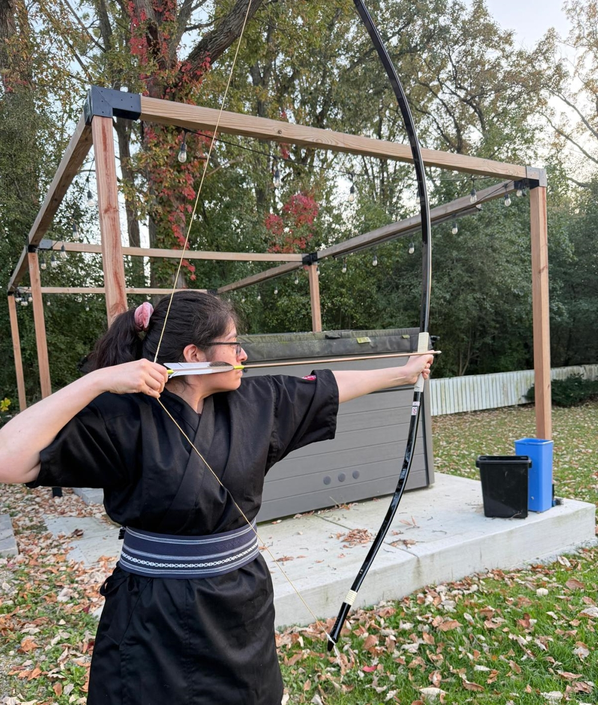
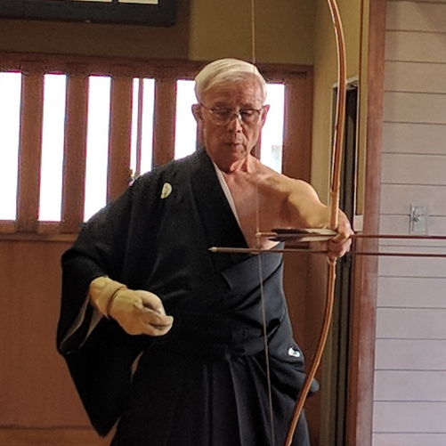

The Way of the Bow

In Japan, you have to wait roughly six months before you can even start shooting.
What is Kyudo?
Kyudo, which translates to "the way of the bow", is a martial arts discipline based on feudal Japanese Samurai archery. Because it is based on the old Samurai art of archery, it carries Bushido values (the seven virtues). Another important essence of Kyudo is also about the importance of Truth, Goodness and Beauty. In modern day, Kyudo is mainly practiced as an art rather than a competitive sport. Its main focus is about discipline, spirituality and personal growth.
As A Student
I have been doing Kyudo for about 6 months, and my experience has been incredible. Generally, I get bored easily when I try new activities or hobbies. But now, I'm always looking forward to my practice. Even when I didn't get to touch a bow the first couple of months (as the initial focus was on manners, posture and footing), I still enjoyed the aspect of discipline and self-growth. It has helped me become a little more confident in myself and controlled, as I am someone that can be quite impulsive yet self-doubting. There's still a lot of room for growth, so I hope that I can do Kyudo for a long time, if not forever.
If you are looking for an activity to do that is calm, rewarding and non-competitive, I really encourage you to try to find a dojo and sign up! Even if it doesn't have Kyudo, dojos will teach other disciplines that follow the same moral code and will offer a similar experience.
Equipment
The main equipment of Kyudo consists of the bow and string (yumi and tsuru), the arrow (ya) and a glove (yugake).
The Bow (Yumi)
The bow is either made out of bamboo or carbon, and I believe it can also be a mix of both. It is quite long, about 2-meters or longer. It's definitely way taller than me. I think my teacher said that for us students, it's better to use the synthetic one until we have properly studied technique better. Bamboo bows are the traditional kind, but improper use will damage it faster.
The String (Tsuru)
It's the string that you attach to the yumi on each end (top and bottom). It can be made of either synthetic fibers or hemp. It comes with two loops, one at the top and the bottom. We have to learn how to make these loops as it affects how you shoot, and if it isn't aligned properly you can damage the bow. I'm still not good at making the loops.
The yumi never has the tsuru attached, it is attached when you are at a place to shoot/practice (like the dojo). When attaching the tsuru, you have to place the loop at the top of the yumi, then push the yumi against the wall in an angle, and push down on the center of it. You bend the bow like this so you can place the loop at the bottom, but it's kinda scary. I've done it a few times but I'm not too confident yet!
The Glove (Yugake)
The yugake is a big leather glove made out of deerskin that covers your thumb, index and middle finger. You need it so your fingers don't get hurt by the string, and it provides better grip in general for the arrow (ya). The ring and pinky fingers are used for holding your second arrow (you generally shoot two per "round"). There's a lot of steps when putting it on that I don't know how to do yet.
I actually got my hand measured by my Kaicho (teacher and headmaster), as he is going to Japan for two weeks so he is going to go buy my glove. I'm super excited. I don't have my own bow yet but Kaicho wants me to get used to shooting properly with a glove on with the dojo's practice bows.
L4-L5 · The Stages of Shooting

I don't have the step names memorized quite yet, so I will list what my dojo's website has, which follows the All Nippon Kyudo Federation's book, "Kyudo Manual, vol. 1: Principles of Shooting". The ANKF is the official governing body of the art in Japan.
- Ashibumi (Foot Placement)
- Dozukuri (Preparation)
- Yugamae (Readying the Bow)
- Uchiokoshi (Raising the Bow)
- Hikiwake (drawing apart)
- Kai (Full Draw)
- Hanare (Release)
- Zanshin (Remaining Mind/Spirit)
Source: "The Eight Stages of Shooting: The Journey to Self-Discovery"